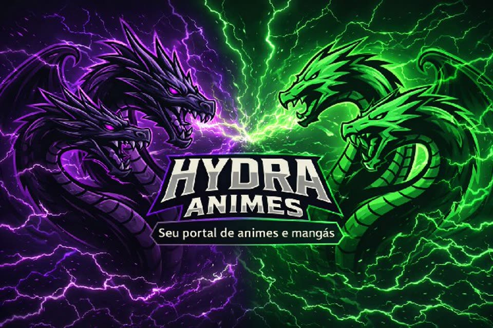

Legendado e dublado
Escolha o áudio e a legenda quando o episódio tiver mais de uma faixa: PT-BR, inglês e espanhol latino.
APK gratuito · v0.13.0 · Android 6.0+
Catálogo, player e downloads no mesmo APK. Assista em legendado ou dublado, em PT-BR, inglês e espanhol latino, com temporadas, Top 10, favoritos e rastreio no AniList e MyAnimeList.

Recursos
Do primeiro episódio ao último da temporada, sem trocar de aplicativo.
Escolha o áudio e a legenda quando o episódio tiver mais de uma faixa: PT-BR, inglês e espanhol latino.
Temporadas, gêneros, lançamentos, busca e o Top 10 dos mais assistidos, atualizados direto da fonte.
Seleção de servidor e qualidade, faixas de áudio e legenda, retomada de onde parou, Picture-in-Picture e Chromecast.
Baixe episódios ou a temporada inteira, com fila, pausa e retomada, e assista sem internet.
Salve a lista do que está assistindo e sincronize o progresso com o AniList e o MyAnimeList.
A biblioteca reúne animes e mangás, com leitor de páginas e a mesma navegação por controle.
Aparelhos
Um único APK atende celular, tablet e Android TV — sem instalar versões diferentes.
Player em tela cheia, Picture-in-Picture, downloads e retomada automática do episódio.
Layout adaptável e leitura de mangá confortável em telas maiores.
O app aparece na lista de apps da TV com banner próprio e navega por D-pad, com foco visível.
Instalação
O processo leva menos de dois minutos. O arquivo não está na Play Store, então o Android pede uma autorização extra.
Toque em “Baixar APK” e confirme o download da versão mais recente.
Use a notificação de download ou o gerenciador de arquivos do aparelho.
Se o Android pedir, autorize “instalar apps desconhecidos” para o navegador ou gerenciador de arquivos.
Confirme a instalação e abra o Hydra Animes. Na TV, o app aparece na lista de aplicativos.
Origem do arquivo: o APK é assinado pelo desenvolvedor e distribuído nas Releases deste projeto. O aviso de “fonte desconhecida” é esperado para apps instalados fora da Play Store — a permissão pode ser desfeita depois da instalação.
Dúvidas frequentes
Sim. Baixar o APK e assistir pelo app não têm custo. Existem recursos opcionais de apoio dentro do aplicativo, mas eles não são necessários para usar o player, o catálogo ou os downloads.
Não para navegar e assistir. O login é usado para manter favoritos e sincronizar o progresso com o AniList ou o MyAnimeList.
Sim, é o mesmo APK do celular. Na TV, o Hydra Animes aparece na lista de aplicativos com um banner próprio e a navegação funciona pelo controle remoto.
O catálogo tem títulos legendados e dublados em português do Brasil, além de episódios em inglês e espanhol latino quando a fonte publica essas faixas. As opções aparecem no player, episódio por episódio.
Sim. Baixe o episódio ou a temporada na tela de downloads e assista no modo offline — útil para viagens e conexões instáveis.
Baixe o APK mais recente nesta página e instale por cima da versão atual: favoritos e progresso são mantidos. O app também avisa quando existe uma versão nova disponível.
Porque o APK é distribuído fora da Play Store. Autorize a instalação apenas para o navegador ou gerenciador de arquivos que você usou e desfaça a permissão depois, se preferir.
Baixe apenas por esta página: o botão leva às Releases deste projeto. Se o arquivo chegou por outro site ou por mensagem, não é uma distribuição nossa.
Baixe o APK do Hydra Animes e continue de onde parou — no celular, no tablet ou na TV.
Versão 0.13.0 · Android 6.0+ · com.wwv.hydrani